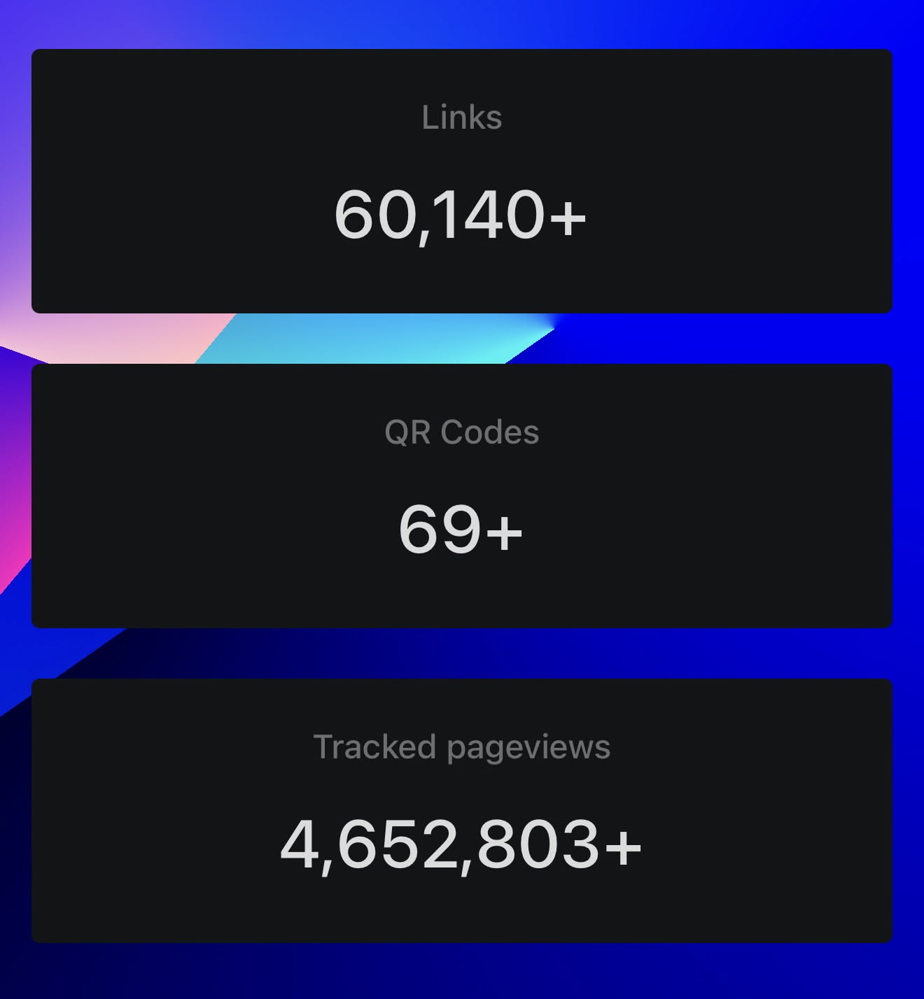

what it was
A linktree-style bio-link site on a domain people actually wanted in their bios. Under the hood it was white-labeled — the core platform was someone else's product wearing e.rip's name. I'm not going to pretend otherwise; the interesting part was never the engine.

what i actually built
The part that was mine: custom css and html integrations layered on top of the platform, so users could have things the stock product didn't offer — cool custom badges being the big one. That customization layer plus the domain is what made an e.rip page feel different from a generic bio link, and it's a big part of why people joined. The rest of the job was operations: growing it, running it, keeping 25,000+ users happy.
This was peak biolink era for me — the same instinct produced lamar.academy, a hand-rolled link hub for my high school.
the exit
Eventually i sold majority ownership of the site. The buyer took the playbook and kept running with it — he now runs loser.gg, built on the same white-label-plus-custom-integrations approach, pushed a lot further than e.rip ever took it. It's a strange kind of proud, watching a thing you started keep evolving without you.
stack
- platform
- White-labeled bio-link engine; my layer was html/css customization on top.
- scale
- 25,000+ users at its peak.
- status
- Sold. Its descendant lives on as loser.gg.